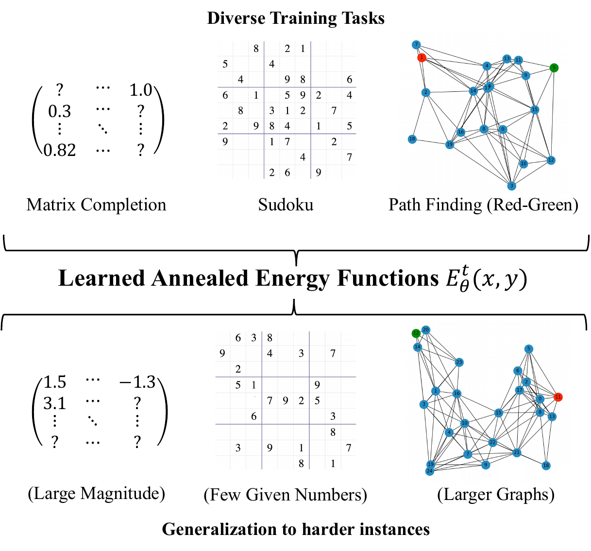
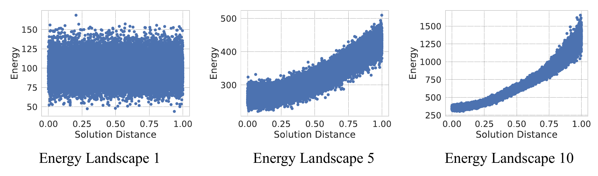
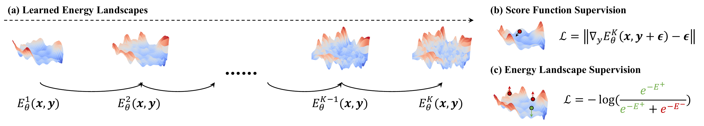
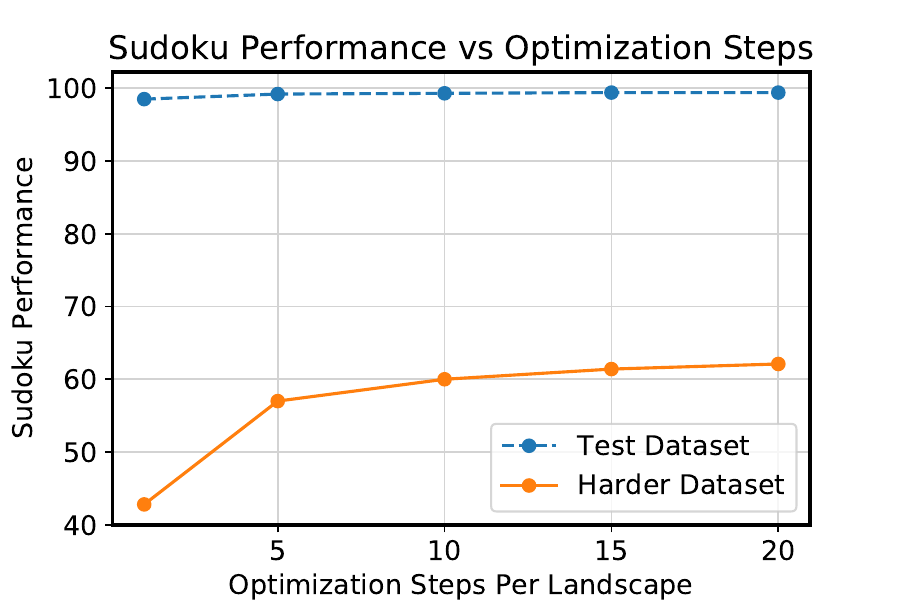
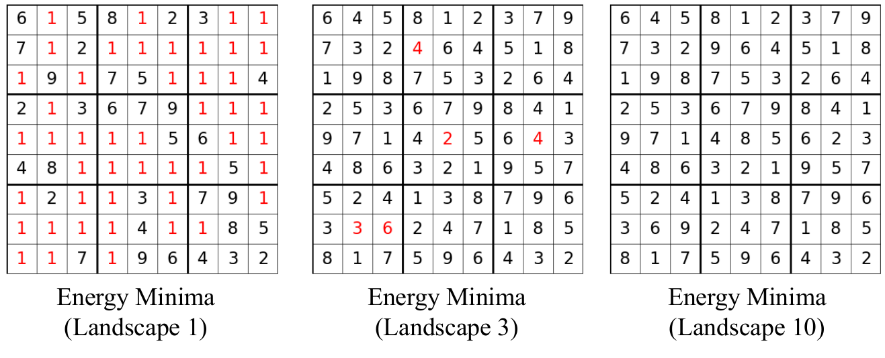
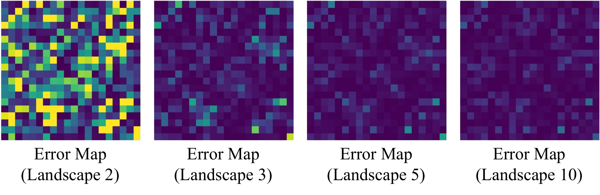

An interactive explainer
Learning Iterative Reasoning through Energy Diffusion
Here is a neural network that solves Sudoku puzzles harder than any it ever saw in training — not by being bigger, but by thinking longer. The trick is to stop asking the network to spit out an answer and instead ask it to score how good an answer is. Reasoning then becomes a search: roll downhill on a learned energy landscape until you find the bottom. Because the search is explicit, you can simply run more steps when a problem is hard. On a Sudoku split with fewer clues than training, this lifts accuracy to 62.1% — where a purpose-built SAT solver gets 3.2% and the previous best neural reasoner gets 28.6%.

Reasoning is the part of intelligence that machine learning has had the hardest time with. A classical solver — a SAT engine, a dynamic-programming routine, a path planner — reasons beautifully, but it can't look at a photograph of a Sudoku board, and it needs a human to hand-code the rules. A neural network learns the rules from data and handles raw inputs, but it answers every question with the same fixed slab of computation, whether the question is trivial or brutal.
So here is the question this paper asks: can a single model learn the constraints of a reasoning task purely from input–output examples, and then — like a real solver — spend a variable amount of computation depending on how hard the instance is?
IRED — iterative reasoning through energy diffusion — answers yes, and the mechanism is the interesting part. Let's build it up from the one idea everything rests on: turning reasoning into a descent.
1. The reasoning gap
Think about what a solver actually does. To solve Sudoku it doesn't compute a fixed function of the board; it searches — proposing fills, checking constraints, backtracking, iterating until everything is consistent. The amount of work it does is not fixed. A nearly-complete board is quick; a sparse one with many ambiguous cells takes far longer. Computation scales with difficulty.
A standard feedforward network throws that away. Train it to map boards to solutions and it applies one fixed pass at inference. Make the test board harder than anything it trained on and it has no recourse — no way to "think more." Recurrent and adaptive-computation networks (PonderNet and friends) loosen this a little by repeating a module, but they still don't expose a clean, explicit knob you can turn at test time, and they're trained by backpropagating through the whole unrolled loop, which is slow and unstable.
The reframing that fixes both problems is to stop predicting the answer directly. Instead, learn a function that scores candidate answers, and recover the answer by searching for the best score. That search is iterative and open-ended — exactly the variable-compute property a solver has, and exactly what a feedforward net lacks.
2. Reasoning as energy descent
Concretely, IRED learns an energy function $E_\theta(\vx,\vy)$: a single scalar that measures how badly a candidate output $\vy$ violates the constraints of the task, given the input $\vx$. Low energy means "this is a good, consistent answer." The prediction is then whatever output minimizes the energy:
$$ \vy \;=\; \argmin_{\vy}\; E_\theta(\vx, \vy). $$
And how do you minimize a learned scalar function? Gradient descent. Start from random noise and repeatedly step downhill along the energy's gradient:
$$ \vy^{\,t} \;=\; \vy^{\,t-1} \;-\; \lambda\, \nabla_{\vy} E_\theta(\vx, \vy^{\,t-1}). $$
That's the whole interface. Every task — adding matrices, completing a low-rank matrix, solving Sudoku, planning a path through a graph — uses the same training and inference loop. Only the encoder that reads $\vx$ and $\vy$ changes with the data format. The constraints of each task are never hand-coded; they're whatever shape of energy landscape the network learns from examples.
3. The trick: anneal smooth → sharp
There's a catch hiding in "just do gradient descent." A learned energy landscape for a real reasoning task is rugged. Sudoku, for instance, is essentially a constraint-satisfaction problem: the true solution sits at the bottom of a narrow, steep well, surrounded by a vast, nearly flat plateau of almost-valid boards. Drop a ball on that plateau and gradient descent stalls — it has no idea which way is down. Optimizing the sharp landscape directly gets you stuck.
IRED borrows the cure from diffusion models: simulated annealing. Instead of one energy landscape, learn a whole sequence of them, $E_\theta^k$ for $k = 1, \dots, K$, indexed by a noise scale $\sigma_k$. Early landscapes are smooth and easy — a single gentle basin. Later ones are progressively sharper, until the last recovers the true, jagged objective. Formally, each landscape is the energy of the data distribution blurred by Gaussian noise of scale $\sigma_k$:
$$ e^{-E_\theta^k(\vx,\vy)} \;\propto\; \int p(\vy^*\mid \vx)\; \mathcal{N}\!\big(\vy;\, \sqrt{1-\sigma_k^2}\,\vy^*,\; \sigma_k^2 \vI\big)\, d\vy^*. $$
You optimize them in order: start on the smooth landscape, roll to its basin, then carry that solution to the next (slightly sharper) landscape and keep descending, all the way to the final sharp one. The smooth landscapes get you into the right neighborhood; the sharp ones pin down the exact answer. The animation below is the whole idea in one shot.
Annealed descent on a 1-D energy landscape. Starting smooth, the solution slides cleanly into the basin; as the landscape sharpens, it stays locked in the deepening well at the true answer $y^*$. A second ball that descends the sharp landscape directly falls into the nearest ripple and gets trapped in a local minimum — the failure annealing avoids.

Now play with it yourself. Drag the sharpness, click to place a starting point, and race a direct descent against an annealed one:
4. Training without unrolling
The earlier energy-based reasoner this paper builds on (IREM) trained its energy function by unrolling all $T$ optimization steps and backpropagating through them to match the ground truth. That's slow, memory-hungry, and unstable — you're differentiating through a long, possibly chaotic optimization. IRED never does this. It supervises a single step, in two complementary ways.
Score supervision (get the slope right)
Take a true answer $\vy^*$, corrupt it with noise at scale $\sigma_k$, and teach the gradient of the energy to point back toward the clean answer — exactly the denoising objective of diffusion models, but applied to the gradient of a scalar:
$$ \mathcal{L}_{\text{MSE}}(\theta) \;=\; \big\lVert\, \nabla_{\vy} E_\theta\big(\vx,\, \sqrt{1-\sigma_k^2}\,\vy^* + \sigma_k\,\epsilon;\; k\big) \;-\; \epsilon \,\big\rVert^2, \qquad \epsilon \sim \mathcal{N}(0, \vI). $$
This shapes the local slope everywhere, so gradient descent always knows which way to go. But there's no guarantee that the deepest point of the landscape — its global minimum — actually sits on the true answer. The slope can be right locally while the global minimum drifts somewhere wrong.
Contrastive shaping (put the minimum in the right place)
So IRED adds a second loss. Construct a negative answer $\vy^-$ (a corrupted version of the true one), and push the energy of the true answer below the energy of the negative:
$$ \mathcal{L}_{\text{Contrast}}(\theta) \;=\; -\log\!\left( \frac{e^{-E^+}}{e^{-E^+} + e^{-E^-}} \right), \qquad E^+ = E_\theta(\vx, \tilde\vy^*;k),\;\; E^- = E_\theta(\vx, \tilde\vy^-;k). $$
This is the loss that forces $\argmin_\vy E_\theta$ to land on the ground truth. The widget below shows what it fixes: with score supervision alone, a spurious basin can sit lower than the true one, so the search converges to the wrong answer. Turning up the contrastive term lifts the impostor and deepens the true well until the global minimum snaps back where it belongs.
Crucially, both losses are computed on a single noised sample. There is no unrolled optimization to backpropagate through, which is why IRED trains both faster and more stably than IREM while ending up with a far better-behaved landscape.

5. The recipe
Putting it together, training is a single combined objective, and inference is a nested loop over landscapes and optimization steps. Two details in the inference loop are worth noticing: every gradient step is accepted only if it lowers the energy (the scalar energy gives you a cheap correctness check that a pure score model can't offer), and between landscapes the solution is rescaled to account for the change in noise level.
# ---- Training (per step) ----
x, y_star ~ data; eps ~ N(0, I); k ~ {1, ..., K}
y_tilde = sqrt(1 - sigma_k^2) * y_star + sigma_k * eps # noise the answer
L_mse = || grad_y E(x, y_tilde, k) - eps ||^2 # score supervision
y_neg = corrupt(y_star) # a wrong answer
y_tilde_n = sqrt(1 - sigma_k^2) * y_neg + sigma_k * eps
L_con = -log( e^-E(x, y_tilde, k)
/ ( e^-E(x, y_tilde, k) + e^-E(x, y_tilde_n, k) ) )
minimize L_mse + L_con w.r.t. theta # no backprop through optimization!
# ---- Inference ----
y = randn() # start from Gaussian noise
for k in 1 .. K: # smooth landscape -> sharp landscape
for t in 1 .. T: # T gradient steps on landscape k
y_new = y - lambda_k * grad_y E(x, y, k)
if E(x, y_new, k) < E(x, y, k): # accept only energy-decreasing steps
y = y_new
y = y * sqrt(1 - sigma_k^2) / sqrt(1 - sigma_{k-1}^2) # rescale into next landscape
return yThe paper uses $K = 10$ landscapes with a cosine noise schedule across every domain — more did not help. The one knob left free at test time is $T$, the number of optimization steps per landscape. That knob is where the magic lives.
6. Thinking longer on harder problems
Because inference is explicit optimization, $T$ is a dial you can turn after training, on a per-instance basis, with the same frozen weights. Spend a few steps on an easy problem; spend many on a hard one. And the payoff is lopsided in exactly the way you'd hope: extra steps barely move in-distribution accuracy (those problems are already solved), but they keep buying real improvement on the harder-than-training instances.

Drag the dial yourself. These are the paper's actual Sudoku numbers:
This is the property no fixed-compute network has. The model effectively detects that a problem is hard — the energy stays high, optimization hasn't bottomed out — and responds by reasoning for longer, just like a search algorithm would.
7. Results
IRED is tested across three families: continuous algorithmic reasoning, discrete reasoning, and planning. Each is evaluated on a "same difficulty" split drawn from the training distribution and a "harder difficulty" split that is deliberately out of distribution. The headline is consistent: IRED is competitive in-distribution and pulls decisively ahead as problems get harder.
| Task (split) | Metric | IRED | Best baseline |
|---|---|---|---|
| Sudoku | standard test (↑) | 99.4% | 99.8% (RRN) |
| harder, fewer clues (↑) | 62.1% | 28.6% (RRN) · 3.2% (SAT-Net) | |
| Visual Sudoku | standard test (↑) | 98.3% | 99.8% (RRN) |
| harder (↑) | 46.6% | 28.6% (RRN) · 0.0% (SAT-Net) | |
| Graph connectivity | test, ≤12 nodes (↑) | 99.1% | 94.3% (IREM) |
| harder, 18 nodes (↑) | 93.8% | 89.8% (IREM) · 61.3% (Diffusion) | |
| Shortest path | test, 15 nodes (↑) | 92.6% | 90.4% (IREM) · 45.2% (Diffusion) |
| harder, 25 nodes (↑) | 91.9% | 88.4% (IREM) | |
| Matrix inverse | same difficulty (MSE ↓) | 0.0095 | 0.0108 (IREM) |
| harder, ill-conditioned (MSE ↓) | 0.2063 | 0.2083 (IREM) · 0.2132 (Diffusion) |
Tables 1–3 from the paper. ↑ higher is better, ↓ lower is better. Baselines: RRN (recurrent relational network), SAT-Net (a differentiable SAT solver), IREM (the prior energy-based reasoner), and a plain denoising-diffusion model with the same architecture.
The Sudoku gap is the stunner. A SAT solver baked specifically for Sudoku scores 3.2% on the harder split; IRED scores 62.1%. The pattern repeats everywhere: on the harder graph-connectivity split IRED holds 93.8% while a diffusion model with the identical encoder collapses to 61.3%. That collapse is the tell — diffusion learns the same denoising slope but lacks the scalar energy, the contrastive shaping, and the accept-if-lower search that let IRED keep refining.


An ablation on matrix inversion (harder split) confirms each piece earns its keep: turning on gradient-descent optimization, then multiple steps, then contrastive shaping drops error 0.2223 → 0.2135 → 0.2113 → 0.2063, with contrastive shaping providing the largest single gain on the hard split.
8. Why this works
It's worth separating the three reasons IRED beats both a feedforward net and a vanilla diffusion model, because each maps to a design choice you can feel in the widgets above.
A scalar energy is a verifier, not just a guide
A diffusion model's score tells you which direction to move; it never tells you whether you've arrived. IRED's energy is a number you can compare across candidates. That single fact powers the accept-if-lower step in the inference loop, lets the model gauge when a problem is still unsolved (energy stays high), and — in principle — lets you compose energies from different constraints by simply adding them. The "energy vs. score" widget is exactly this: the energy field has a bottom to find and a height to read; the score field is just arrows that can circulate forever.
Annealing turns a hopeless landscape into a tractable curriculum
The true objective for a constraint problem is brutally non-convex — narrow wells in a sea of flatness. Optimizing it cold is hopeless. By learning a sequence from smooth to sharp, IRED converts one hard search into a chain of easy ones, each initialized by the last. The energy-landscape figure shows the smooth-to-steep progression isn't a story — it's measurably what the learned landscapes look like.
Contrastive shaping aligns the minimum with the truth
Score matching gets the local slope right but says nothing about where the global minimum lives. Without the contrastive term, the search can confidently descend into a basin that isn't the answer. Adding it forces the deepest point onto the ground truth — which is why it's the component that helps most precisely on the hard, out-of-distribution instances, where a misplaced minimum hurts the most.
9. What it means
IRED is, in retrospect, an early and unusually clean statement of an idea that has since reshaped the field: test-time computation as a first-class lever. The lesson isn't "energy models are good" so much as "if inference is an explicit search rather than a fixed forward pass, you get to trade compute for accuracy at the moment you need it — adaptively, per problem, with weights you already trained." A model that can recognize a hard instance and respond by reasoning longer is doing something qualitatively closer to what we mean by reasoning than a model that answers everything in one breath.
Open problems
- Failure mode: confident wrong minima. The authors note IRED sometimes assigns lower energy to an invalid-but-plausible board than to the true solution. Better-shaped landscapes — harder negatives, stronger constraints — are an open direction.
- Knowing when to stop. The energy value gauges difficulty, but the paper sets $T$ by hand. A principled stopping rule that reads the energy and allocates compute automatically is the natural next step.
- Scaling the search space. Gradient descent on a learned energy is elegant for modest $\vy$; scaling to very high-dimensional or richly structured outputs (long plans, large programs) without the landscape becoming intractable remains hard.
The bottom line
Don't predict the answer — learn to score answers, then search. Smooth the search with annealing so it doesn't get stuck, shape the landscape so the bottom is the truth, and verify each step with the energy itself. Do that, and "think harder on harder problems" stops being a slogan and becomes a slider you can drag. The 62.1% Sudoku number is impressive; the mental model behind it — reasoning as descent you can extend at will — is the part worth keeping.